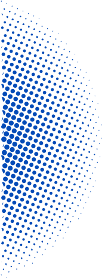
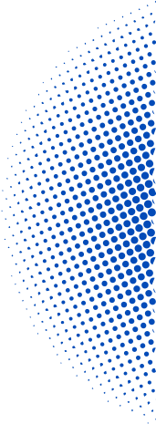

<main>
  <nav [class]="isHomePath ? 'navigation-bar home-bar' : 'navigation-bar'">
    @if(isHomePath){
    <div class="empty-box"></div>
    } @if(!isHomePath){
    <button (click)="handleClickBack()">
      
    </button>

    <span class="navigation-title title-main">{{ title }}</span>
    }

    <button (click)="toggleBurguerMenu()">
      
    </button>
  </nav>
  <div
    [class]="
      isBlueLayout
        ? 'bg-main gradient-background'
        : isDarkBlue
        ? 'bg-main dark-background'
        : isRoundPath
        ? 'bg-main round-background'
        : 'bg-main home-background'
    "
  >
    @if(isBlueLayout) {
    
    
    
    }
    <div
      [class]="
        isBurguerMenuVisible
          ? 'header-burgerMenu burguer-opened'
          : 'header-burgerMenu'
      "
    ></div>

    @if(!isMobile || isHomePath){
    
    

    
    }
  </div>

  <div class="content">
    @if(isBurguerMenuVisible){
    <app-burguer-menu (formEvent)="onBurguerMenuItemClick()" />
    }@else{
    <ng-content></ng-content>
    }
  </div>
</main>
